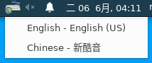

選擇剛建立好的notebook，點選Connect，若未啟動則先點選右側的按鈕啟動。
進入NoVNC畫面，點選連線。
即可開始進行使用。
系統內有預設注音輸入法可供使用。

若想要使用其他輸入法(如倉頡、拼音等...)，可以在輸入法圖示上右鍵 → Preferences → Input Method → 右側Add → Chinese，然後選取要使用的輸入法即可。
若想使用系統剪貼簿進行複製貼上，請將網址列前方修改為
https://120.126.23.245:12345/
並允許存取剪貼簿。